Статьи об английском языке
Слова, грамматика, разговор и аудирование — простыми словами для русскоговорящих.
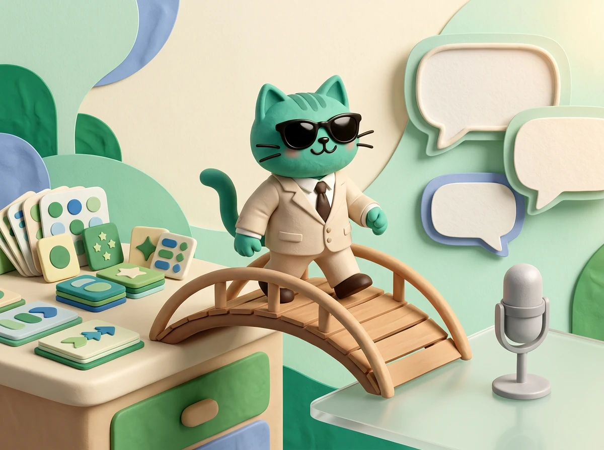
Разговорная практикаПочему я знаю слова и грамматику, но не могу говорить?
Понимать правило и быстро сказать фразу — не одно и то же. Разбираем, как начать практиковаться.
Читать →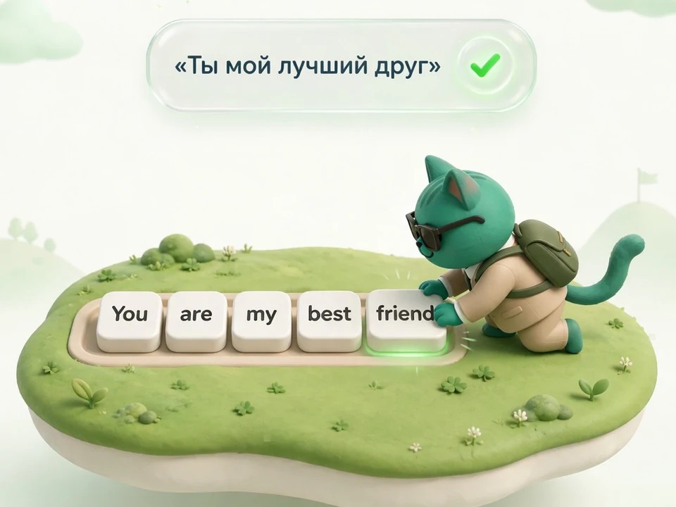
МетодикаПлан на 1000 английских слов за месяц: сколько учить и как повторять
План на 1000 слов — это примерно 34 новых слова в день. Посмотри, как распределить занятия и повторы.
Читать → МетодикаПочему мы забываем английские слова
Узнавать слово и вспоминать его самому — разные задачи. Разбираем, как повторять без зубрёжки.
Читать →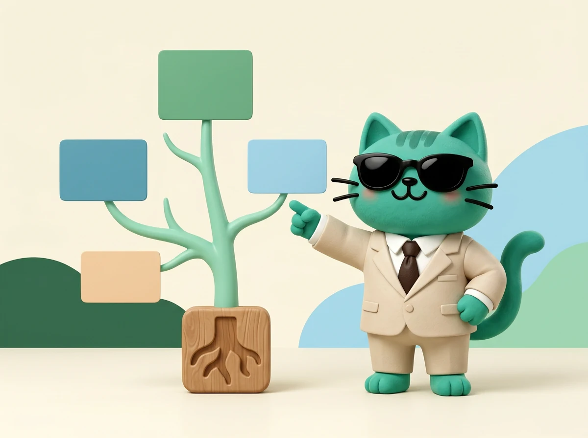
ГрамматикаКак быстро понимать английские слова по частям
Приставки, корни и суффиксы помогают узнавать группы родственных слов — без обещаний выучить всё за секунду.
Читать →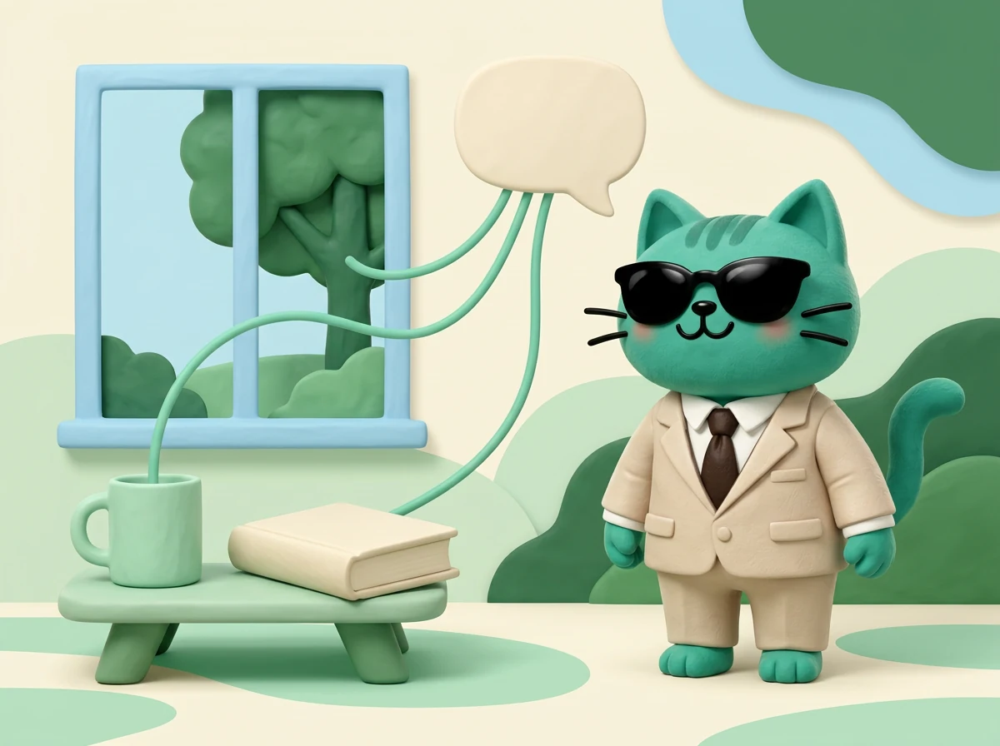
Разговорная практикаКак перестать переводить в голове и начать думать по-английски
Не запрещай себе перевод. Тренируй короткие мысли, знакомые фразы и простые описания напрямую.
Читать →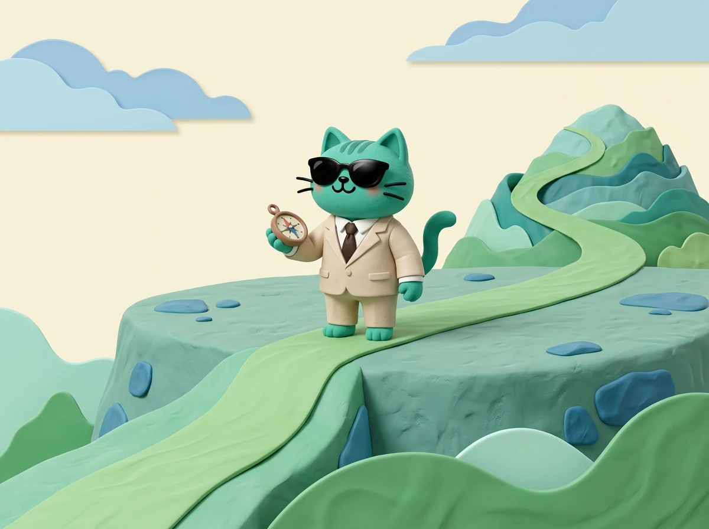
МетодикаПочему прогресс в английском остановился на уровне B1?
На среднем уровне улучшения не всегда заметны. Проверь навыки и выбери один следующий шаг.
Читать →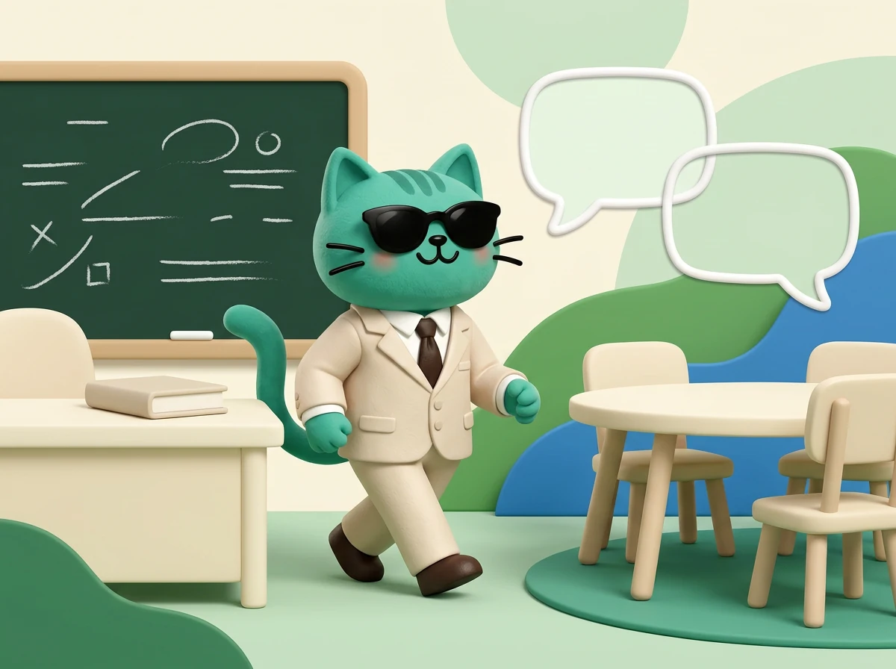
МетодикаУчил английский в школе, но не могу говорить: что пошло не так?
Возможно, ты больше решал задания, чем говорил. Разбираем, как добавить разговорную практику сейчас.
Читать →Разговорная практикаКак перестать бояться и стесняться говорить по-английски
Начни с спокойных ситуаций, коротких ответов и фраз, которые помогают продолжить разговор.
Читать →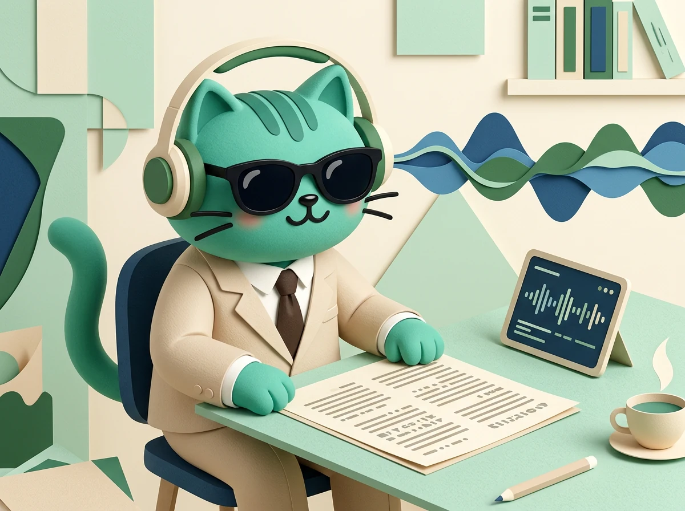
АудированиеПочему я читаю по-английски, но не понимаю речь на слух?
Связная речь, темп и разные акценты усложняют аудирование. Вот как тренировать слух без перегруза.
Читать →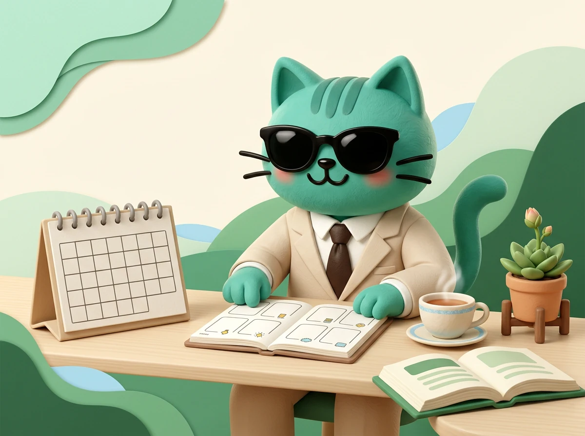
МетодикаНужен ли мне английский и как не бросить учёбу?
Сначала выбери свою причину. Затем сделай план небольшим, понятным и подходящим твоему расписанию.
Читать → ГрамматикаВремена английского: таблица простыми словами
Короткая таблица времён и примеры: как сказать о привычке, прошлом и планах.
Читать →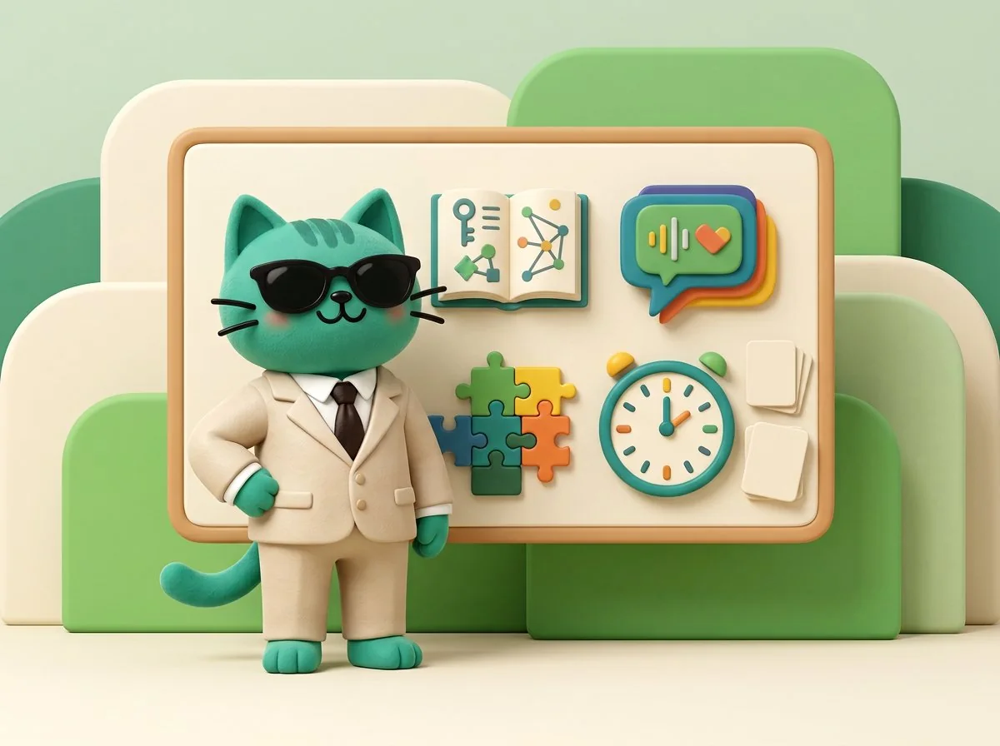
Грамматика15 полезных тем об английском
15 полезных тем: времена, глаголы, артикли, предлоги и слова. Это список для чтения, не рейтинг поиска.
Читать →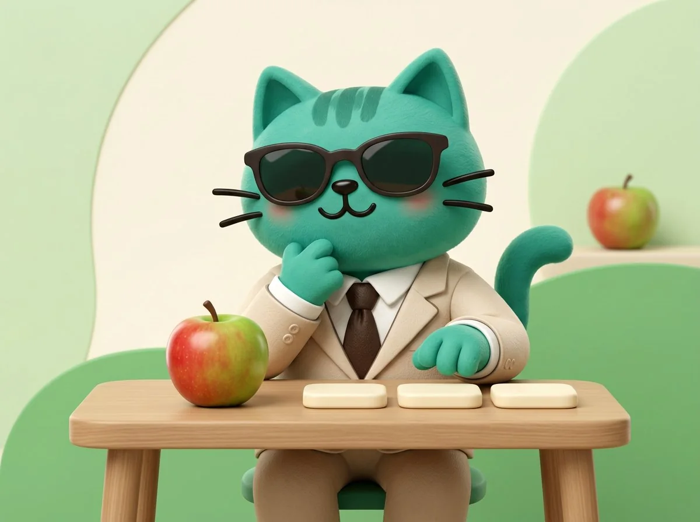
ГрамматикаАртикли a/an и the: как выбрать простыми словами
Когда писать a/an, the или ничего? Простая схема и короткие примеры.
Читать → Экзамены
Экзамены
Сколько слов учить для ЕГЭ: примерные ориентиры
Точного числа слов нет. Смотри на темы, примеры заданий и простой план подготовки.
Читать →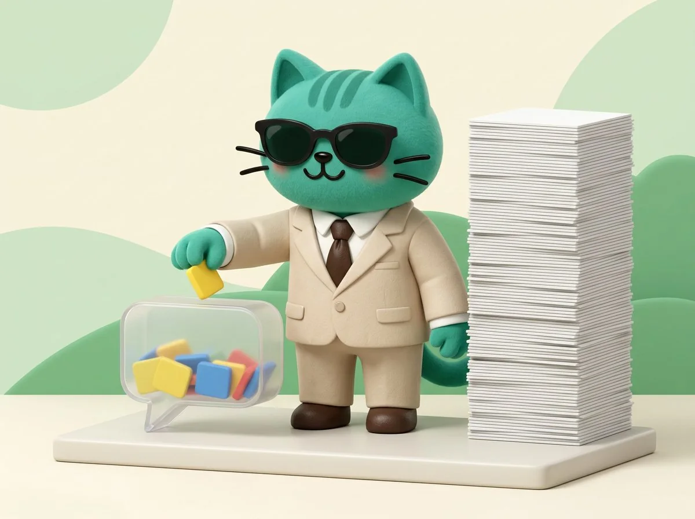
Словарный запасСколько слов нужно знать в английском, чтобы заговорить
Числа — только ориентир. Важно узнавать слова и уметь самому использовать их в коротких фразах.
Читать →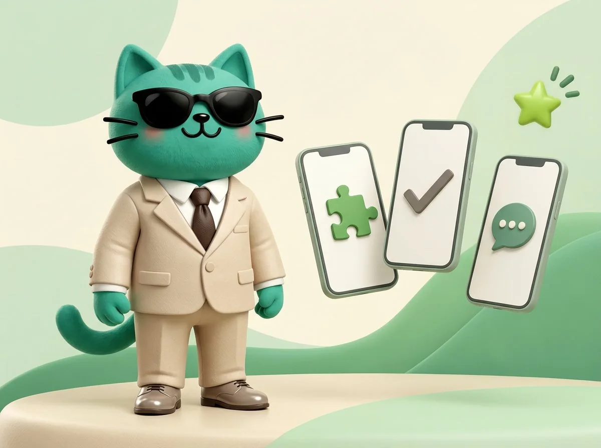
Приложения и сервисы5 приложений для английского: что выбрать для грамматики
Пять приложений: чем они помогают и как выбрать формат под свою цель.
Читать →В этой рубрике пока нет статей. Загляните в другие темы.